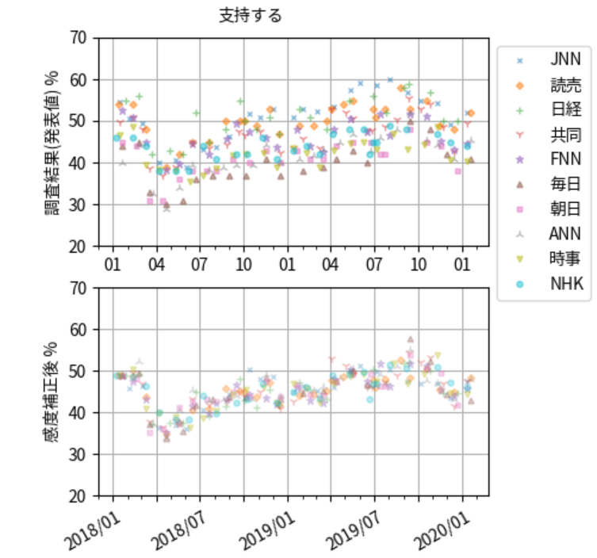
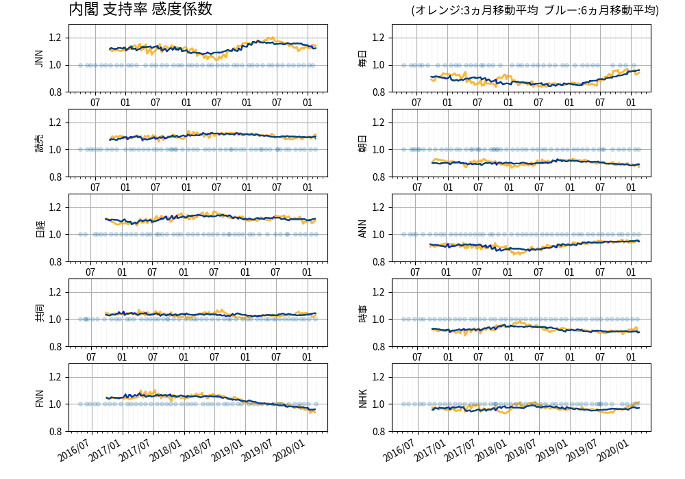
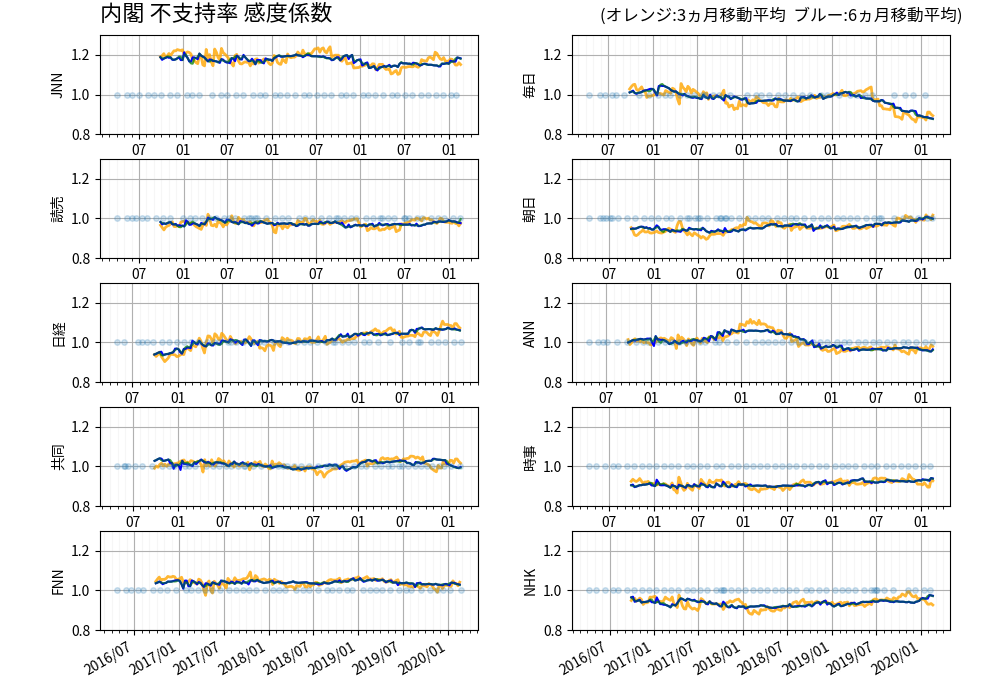
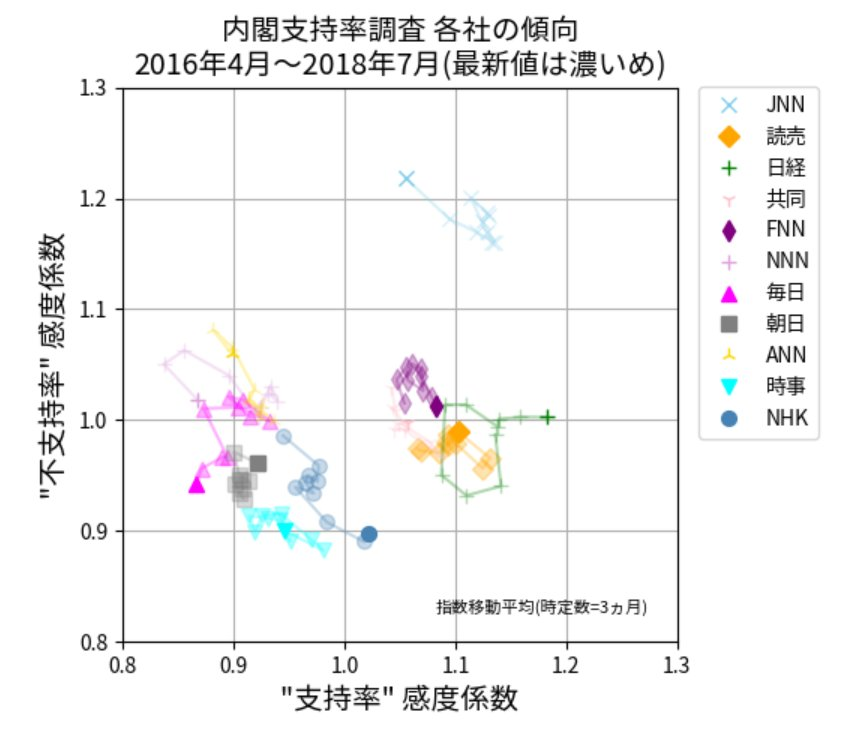

1. 内閣支持率の分析手順¶
1.1. 現状¶
日本には、月に一回のペースで比較的規模が大きい世論調査を実施している報道 機関がいくつか存在します(2020年時点で約10社)。報道機関(調査会社)によって 内閣支持率の発表値に高め低めがあることは、知っている人も多いでしょう。そ のため、内閣支持率の変化を見るには、同じ会社の前回値との比較が基本になり ます。ところが、回答数が 1000 件の調査であれば、+/- 3 pt の誤差(標本誤差, 信頼区間95%)があるので、一社だけ見るだけでは、月をまたいで 6 % の変化が あったとしても確定的な事は言えません。報道機関ごとに、高め低めの傾向があ ったとしても、その傾向が安定していれば、統一的に扱える可能性があります。 以下、全社データを統計的に処理することで、もっと早く、もっと高い精度で、 変化を捉える方法について述べてみたいと思います。
ここで示した方法の基本は、三春充希(はる)★未来選挙プロジェクトさんが実施 している分析を参考にして独自にまとめたものです。平滑化などの具体的な手法 やそのパラメータの違いはあっても、原理的な違いはあまりないと思っています。 ただし、政党支持率などの値が小さい調査に適用するには、なにかしら工夫が必 要なのだろうと想像しています。
1.2. 平均化の目的と問題点¶
平均化には２つの目的があります。一つは複数のデータを使って標本誤差の影響 を低減すること、もう一つは、調査会社毎に異なる感度の偏りを取り除いて標準 的な指標を得ることです。調査日時は報道機関によって異なるため、特定の週に 感度が高め(低め)の調査が偏る事態が発生します。そのまま平均値を計算すると、 感度の偏りが平均値に現れてしまいます。グラフを見ただけだと、感度の偏りに よる見かけの(ウソの)変化なのか、本当の変化なのか分からなくなってしまいま す。
1.3. 事前に感度を補正する意味¶
平均を求める前に各社の感度を調整できれば、さきの問題は解消されます。 いくつか前提が必要ですが、理想的な状況では、一週間毎に +/- 1pt 程度の精度で 支持率の増減を議論できる可能性もでてきます。
一つ注意しておきたいのは、内閣支持率には、「真の値」といった考えがなじま ないことです。調査方法によって高い低いがあって当然です。以下の説明では、 10社なら 10社の平均値を基準として、その平均値と各社の違いを、係数(倍率)で 表現すること想定しています。くどいようですが、この係数が 1 から離れてい るからといって、その調査の信頼性が劣るわけではありません。
1.4. 感度の求め方¶
原理を示すために、分析対象が A社, B社, C社の 3 社の場合について説明します。
まず、調査会社毎に分析期間に含まれる発表値の平均を求めます。 それぞれ、\(\overline{A}, \overline{B}, \overline{C}\) とします。 さらに、\(\overline{A}, \overline{B}, \overline{C}\) の平均 \(M\) を求めます(平均値の平均)。
感度は平均に対する比率のことなので、 A社の感度は \(\overline{A}/M\) と表せます(B社, C社も同様)。 各社の発表値を感度で割れば、感度を補正した値 (感度 1.0 に相当する内閣支持率)が得られます。
原理的には、感度を 1 に合わせるのではなく、高め(低め)の感度に合わせても かまいません。ただし、そういう値を発表する場合には、無用ないさかいを避け るためにも、高めと低めの両方を同時に提示することをお勧めします。
1.5. 感度補正の実例¶
感度補正の考えを、報道 10 社の実際のデータ(2年間)に適用した結果を見てみ ましょう。
{kind=link}
感度を補正する前の発表値では +/-10 pt くらいのバラツキがありますが、 感度を補正した後のプロットでは、ほとんどののデータが +/- 3pt 程度に収 まっていることが分かります。 この残ったバラツキは、調査結果に元々含まれる標本誤差で説明できそうですね (標本誤差について一例あげると、回答数が 1000、支持率が 50 pt なら、標本 誤差(信頼区間 95%) は約 3 pt になります)。
1.6. 感度補正の結果からわかること¶
結果が理論と整合していれば、 理論そのもの、理論が要求する前提、検証に使用したデータは 妥当であると判断して良いでしょう。 今回のケースでは、
感度係数という単純な補正で十分補正できる
調査会社毎の感度は安定している
元になるデータは信頼できる(恣意的な改竄などの痕跡はない)
と判断できそうです。
判断について「正しい」ではなくて「妥当である」という言葉を使った理由につ いて一言。正しさというのは、目的や状況次第で変わってくるものなので、妥当 という表現を使っています。例えば、現状(回答数 1000 件程度の調査が 10 組 くらい)であれば、各社の感度を１つの係数で表現するモデルで十分であり、あ まり複雑な補正は必要なさそうということです。より大規模な世論調査が実施さ れるといった状況の変化があれば、より精密な補正が可能になるかもしれません。
1.7. 全社平均の求め方¶
全社平均を表す曲線にもいろいろ種類がありますが、移動平均を使うのが簡単です。 単純な移動平均(前後２週間のデータの平均を求めるなど)で十分なこ とも多いけれど、支持率の変化をいち早く検出したい場合は、時間差に応じて重みを変化させる、 加重移動平均を使うと良いでしょう。 重みの選び方にもいろいろ種類がありますが、ここで指数関数を使った方法を紹介します。 理論的に優れているといったことではなく、 意味が明確で、実装も簡単(間違いにくい)という、現実的な理由で使っています。
時刻 t における移動平均 \(Y(t)\) は、以下のようになります。
\((T_j, X_j)\) は、求めたい日時 t から一定の期間(例えば +/- 30 日)に 含まれる調査データです。D は対象時刻と調査時刻の時間差を規格化するための 時定数です。例えば、D = 7 日の場合について具体的な数字を列挙すれば、当日の 重みは 1.0、7日離れると 1/e = 0.37、14日離れると1/e^2 = 0.13 になります。
D の値は、実際にグラフを書いて、見た目で選んでかまいません。 長期的な変化を精度よく見たいなら D は大きめに(例えば D=30日)、 短期的な変化(サンプリング間隔の7日スケール)を捉えたいなら D は 小さめ(例えば D=7日くらい)が良さそうです。どちらが正しいということではなく、 目的に応じて使い分ければよいものだと思います。 何かしらの客観性を持たせたいのであれば、 残差の二乗和を最小化する D を探すのも一つの手です (それが最善というわけでもありませんが)。
ついでにコード断片も載せておきます(適当に切り取ったので、このままでは動 きません)。
# _tt = [t1, t2, t3, .....] 調査の日付
# _vv = [t1, t2, t3, .....] 上記日付における調査結果(感度補正後)
def _mav(t):
# 時刻 t における窓付き指数移動平均
# w_days : [day] 窓幅
# k_days : [day] 時定数
#
ndx = (_tt >= t - w_days) & (_tt <= t + w_days) # 窓でクリップ
tt = _tt[ndx] # 窓に含まれる調査の日付
vv = _vv[ndx] # 値
ww = np.exp(-np.abs(tt - t)/k_days) # 指数的に減少する重み
ans = np.sum(ww*vv)/np.sum(ww) # 重み付き平均
return ans
# 全社平均(指数移動平均)を求める。
# t_node : 稠密 plot を生成する時刻刻み(こまかめに、2日ごととか)
v_node = [_mav(a) for a in t_node]
plot(t_node, v_node)
1.8. 標本数と標本誤差¶
説明の都合上、ここで標本誤差について説明します。 調べればすぐに分かることですが、標本誤差の値をいくつか 求めておきましょう。 誤差に正規分布(標準偏差をσ)を仮定したとき、 結果が+/-λσの範囲に収まる確率をが信頼水準と呼びます。 信頼水準は、λ=1 なら 68.2%, λ=2 なら 95.4% です。
標本調査の誤差 d は、以下の式で与えられます。
例えば支持率が 50 pt 付近にあるときの標本誤差(信頼区間 95%)は、 以下の通りです。
N 標本数 |
d 標本誤差 |
|---|---|
500 |
4.5 pt |
1000 |
3.2 pt |
2000 |
2.2 pt |
1.9. より丁寧な解析¶
複数の調査結果の平均を求めるときは、各測定の精度に応じて重み付けをするとより 丁寧です。いくつか仮定はありますが、重みとして分散(標準偏差の二乗)の逆数が よく用いられます。標準偏差 \(\sigma\) は、前項で示した、 信頼区間 95% の標本誤差 d の半分の値です。
1.10. 長期的な感度の変化への対応¶
日本の報道機関の調査について調べると、内閣支持率などの感度は安定している ことが分かります。定量的に言い換えると、サンプル数や回答数から予測される 精度を十分に生かせる安定性があります。調査する担当者は、変更になることも 多いと思われますが、それでも安定性を保つようにきちんと統御されている様子 がうかがえます。
そうはいっても、長い年月の間には調査方法の変更や、その他の要因によって感 度も変化することはあります。そういう場合は、直近 半年～1年くらいの調査結 果を使って、感度を求め直せば、感度の変化を考慮した分析が可能になります。
報道各社の内閣支持率のトレンド(2017～2020年)を以下に示します。
{kind=link}
不支持率の感度係数(2017～2020年)を以下に示します。
{kind=link}
1.11. ２グループに分けた経緯¶
感度を補正する手法が適用できるためには、各社の感度が安定していることが必用です。 そこでまず、各社の感度を調べてみました(結果は前項の通り)。 各社の係数を、支持率 -- 不支持の２次元平面にプロットしてみると、 ３つのグループが見えてきます。
{kind=link}
JNN は単独なので分析から除外することにしました。JNN が信頼できないとい うわけではなく、平均化する相手がいないのでやむなく除外しているだけです。
残りの２つのグループが、感度係数の違いだけで表現できるとは限らないので (グループが違なるならば、性質も異なると考える方が安全)、しばらくグループ ごとの動きを調べてみることにしました。
10社まとめて平均化することの妥当性を確認するには、補正後の値と発表値との 差を見るだけで十分という考え方もあります。そういう観点からは、無駄が多い 分析だなと思ったりもしますが、より高精度な感度補正の方式を導き出せる可能 性もゼロではありません。10社の全社平均というのは 全社の調査結果を、支持率--不支持率平面の一点の動きで代表していることになります。 元の調査の広がりが小さくはないので、一点ではなく二点で代表すれば、何か見えてくる かもしれないという期待もあります。
1.12. ２グループに分ける利点/欠点¶
２つのグループに分けて分析することの利点と欠点を列挙します。
利点
調査会社によって差がある事、その差が安定していることを直接示せる。
２グループの平行度から定量的な誤差指標を導けるかもしれない
グループ間に単純な感度以外に差があれば、その差を検出できるかもしれない。
感度以外に差がないことが示せれば、報道10社の補正や平均の妥当性をアピールする材料となる
欠点
精度と時間分解能の両方で、全社を使った分析に劣る
グループ分けが安定とは限らない(政権交代などで見直しが必要になる可能性も)
1.13. その他¶
twitter では、２グループに分けた分析の他に、支持率--不支持率の二次元プロ ット(調査結果そのまま)を投稿しています。各社の動きが互いに似ている事を、 定性的に示すだけであれば、こちらで十分かな思ったりもします。発表値をプロ ットしているだけなので、共通理解を得やすいという利点もありそうです。アニ メーションは一度見れば十分なのですが、初見の人には評判が良いので、投稿を つづけています。
内閣支持率は調査する機関によって差があるけれども、同じような動きを検出で きています(動きがほぼ平行)。そのことを一目で伝えるには、どういった表現が良 いかといったことを考えながら、ぼちぼちと投稿を続けたいと思います。
1.14. ２グループ分析で分かったこと¶
支持率の 2 グループ間の差は約 10 %。各グループ内で +/-5 % の差がある。
不支持率の 2 グループ間の差は少ない (高め/低めが逆転することもある)
重ね聞きによって支持率だけでなく不支持率も増加すると説明されることが 多いが、今の日本に関して言えば重ね聞きの有無による不支持率の差は小さい。
{kind=link}